Proof over prediction · built for agent fleets
The cheapest model takes
the first pass.
It clears your gate — proven, not guessed — or the request escalates.
Firstpass routes every LLM request to the cheapest model that provably passes your quality gate, and hands you a signed receipt for the decision.

The wedge
Every other router decides before generation.
Firstpass decides on the actual output.
Model routers on the market route by prediction — a learned policy guesses which model will answer well, sends the request there, and never checks. Firstpass routes by proof.
Guess, send, hope
A classifier picks a model up front from the prompt alone. If the guess is wrong, the bad answer ships anyway — you find out downstream, if ever. No record of why. Retrain the policy to improve.
Send cheap, gate the output, escalate on fail
Run the cheapest plausible model, then run a real gate on the real output — tests, typecheck, schema, a fresh-context judge. Escalate exactly one rung only when the gate fails. Serve the first output that passes. Every decision is a signed, re-derivable trace.
How it works
Three moves, one signed receipt.
Route to the cheapest rung first
A declarative ladder (cheapest → most capable) per traffic slice. Drop-in Anthropic-compatible proxy — point /v1/messages at it. BYOK: your keys pass through, redacted from every log.
Gate the real output
Inline gates (non-empty, JSON-valid, JSON-Schema) or subprocess plugins (your tests, linter, judge) that read the candidate on stdin, never argv — injection-resistant. Per-gate error budgets auto-disable a flaky gate before it takes down the route.
Escalate one rung — or serve, and record everything
On a gate fail, escalate a single rung, budget-capped; a provider 5xx fails over cross-provider. The chosen output is served in the provider's native shape, and the whole decision becomes a tamper-evident hash-chain trace an external auditor can re-derive.

The receipt
Not a dashboard number. A decision you can audit.

The demo stands up a mock upstream and the proxy, drives one real decision end-to-end, and prints the receipt — no keys, ~10 seconds:
rung 0 · anthropic/claude-haiku-4-5 · FAIL · $0.0023 rung 1 · anthropic/claude-sonnet-5 · PASS · $0.0110 served rung 1 · saved 73% vs always-top-tier audit chain · verified ✓ feedback logged · chain still verified ✓
Illustrative output from the bundled no-keys demo. The cheap model tried first, the test gate caught it, one rung of escalation fixed it, and the sealed record survived a later outcome-feedback write unchanged.
What's actually new
Cascading is prior art. The honesty is the product.
Cheap-first cascades exist and we don't claim to have invented them. What Firstpass adds is the machinery that makes the decision trustworthy and self-improving:
Tamper-evident audit
Every decision is a hash-chained JSON trace with a re-derivable digest. An external auditor verifies the chain without trusting us — the invariant that must never regress.
Outcome-feedback loop
POST /v1/feedback folds downstream reality — did the tests pass an hour later? — back onto the trace via a deferred-verdict side table that never alters the sealed record.
Zero-retrain
Improve routing by tuning gates and ladders in declarative config, not by retraining a policy model. The gate is the knob; the config is the source of truth.
Proof, not adjectives
A reproducible report with error bars and a kill switch.
The numbers below come from the proof harness (cargo run -p firstpass-bench) running against a simulated backend and gate behind real-backend trait seams. They are clearly labeled SIMULATION; live-provider numbers are pending API keys. This is the pre-registered result, not a cherry-picked screenshot.
cheaper at equal-or-higher success vs a predictive router (sim)
served-failure rate vs 0.46 for prediction — verification catches what prediction serves blind (sim)
conformal guarantee: serve iff gate-score ≥ λ ⇒ ≤10% served-failure at 95% confidence — a certificate, not a hope
Pre-registered kill criterion
The harness ships a published rule that says stop if the thesis fails — bootstrap confidence intervals, a split-conformal served-failure guarantee, and a go/no-go gate on the whole bet. Current verdict on the simulation: PROCEED — to be re-run against live providers.
Quickstart
See the whole loop in ~10 seconds.
1 · Run the no-keys demo
# real HTTP, no API keys, prints the receipt cargo run -p firstpass-proxy --example demo
2 · Or serve it (Docker)
docker build -t firstpass .
docker run -p 8080:8080 -e FIRSTPASS_BIND=0.0.0.0:8080 firstpass3 · Point your agent at it & enforce
# copy firstpass.example.toml -> firstpass.toml FIRSTPASS_MODE=enforce \ FIRSTPASS_CONFIG=./firstpass.toml \ cargo run -p firstpass-proxy # drop-in Anthropic-compatible endpoint curl localhost:8080/v1/messages -d @req.json
Config is declarative TOML: routes → mode, a cheapest-first model ladder, and the gates that must pass. See firstpass.example.toml.